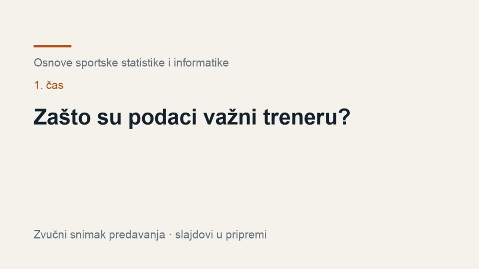
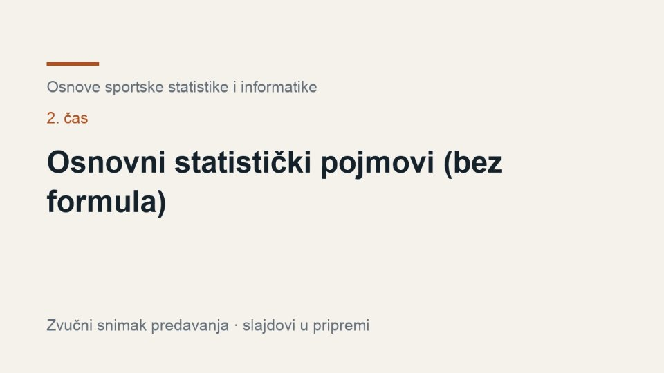
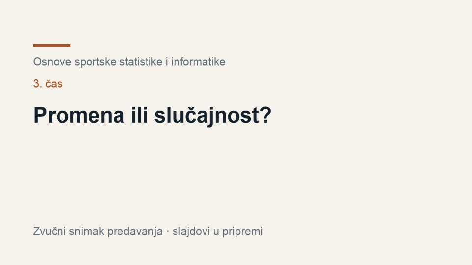
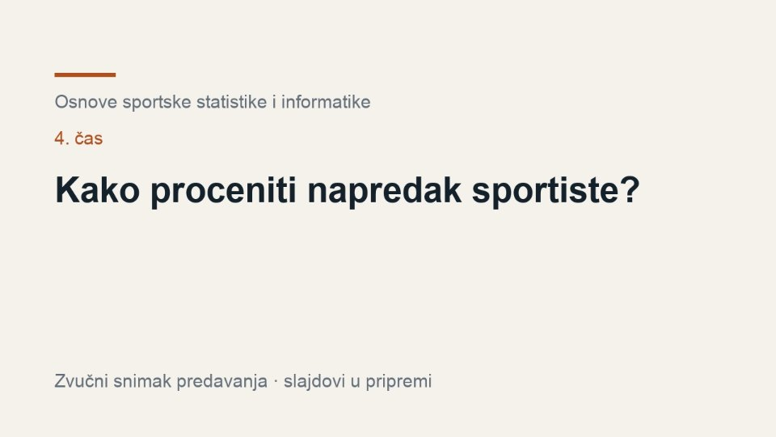
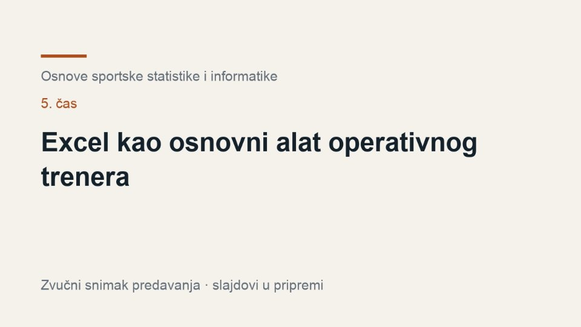
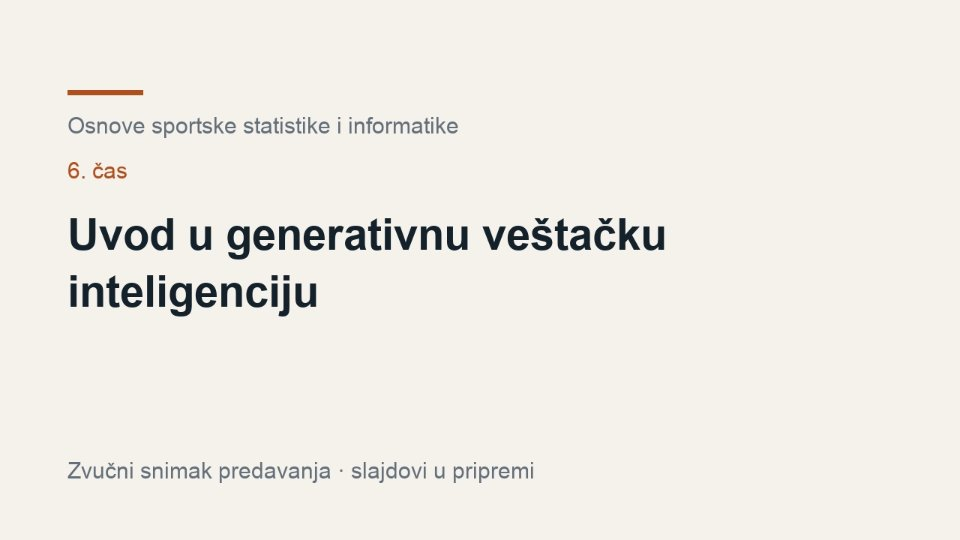
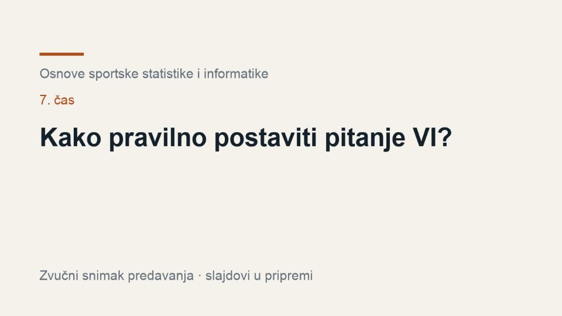
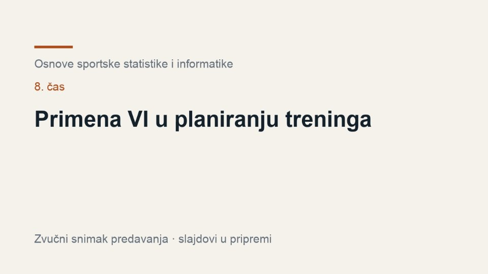
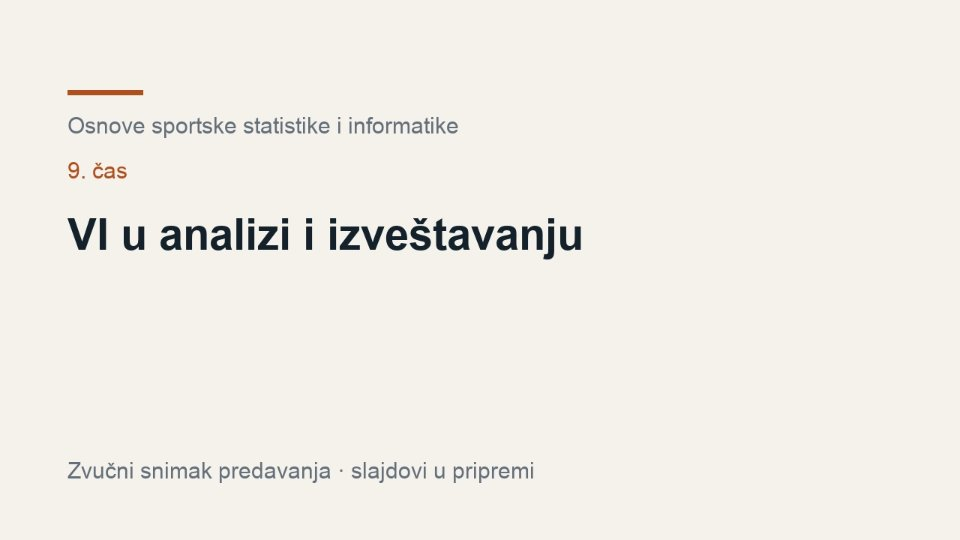
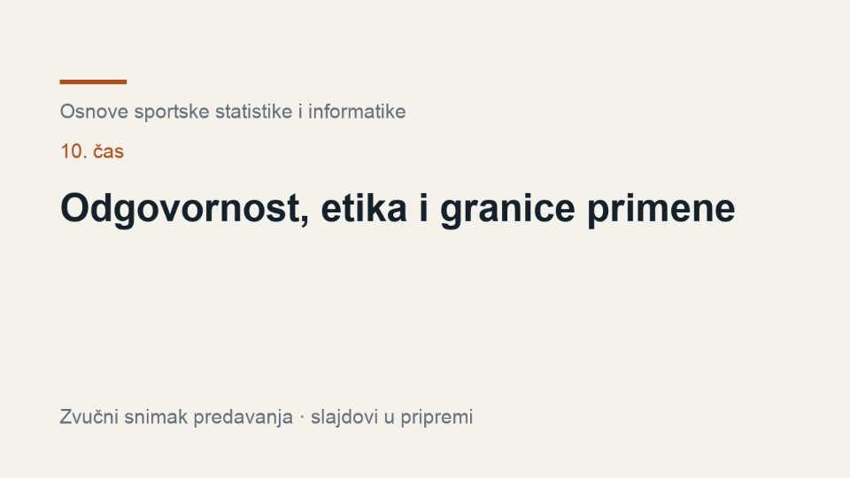

Stručno osposobljavanje: 3. nivo i 4. nivo (sportski učitelj)
Osnove sportske statistike i informatike
Prikupljanje i analiza rezultata testiranja, procena stvarne promene i donošenje trenerskih odluka uz pomoć Excela i alata zasnovanih na veštačkoj inteligenciji. Predavači: prof. dr Dragan Mirkov i prof. dr Miloš Marković. Za praktični deo je potreban računar sa instaliranim Excelom (2010 ili noviji) i, od šestog časa, nalog kod jednog asistenta zasnovanog na veštačkoj inteligenciji (besplatna verzija je dovoljna).
Lekcije
- Lekcija 0O predmetu: silabus i način radaCilj, ishodi, deset časova, šta je potrebno za praktični deo, literatura
- Lekcija 1Zašto su podaci važni treneru?Zvučni snimak predavanja; slajdovi su u pripremi.Video 18:21

- Lekcija 2Osnovni statistički pojmovi (bez formula)Zvučni snimak predavanja; slajdovi su u pripremi.Video 18:55

- Lekcija 3Promena ili slučajnost?Zvučni snimak predavanja; slajdovi su u pripremi.Video 17:37

- Lekcija 4Kako proceniti napredak sportiste?Zvučni snimak predavanja; slajdovi su u pripremi.Video 23:04

- Lekcija 5Excel kao osnovni alat operativnog treneraZvučni snimak predavanja; slajdovi su u pripremi.Video 19:51

- Lekcija 6Uvod u generativnu veštačku inteligencijuZvučni snimak predavanja; slajdovi su u pripremi.Video 17:28

- Lekcija 7Kako pravilno postaviti pitanje VI?Zvučni snimak predavanja; slajdovi su u pripremi.Video 18:32

- Lekcija 8Primena VI u planiranju treningaZvučni snimak predavanja; slajdovi su u pripremi.Video 20:19

- Lekcija 9VI u analizi i izveštavanjuZvučni snimak predavanja; slajdovi su u pripremi.Video 20:26

- Lekcija 10Odgovornost, etika i granice primeneZvučni snimak predavanja; slajdovi su u pripremi.Video 21:59
